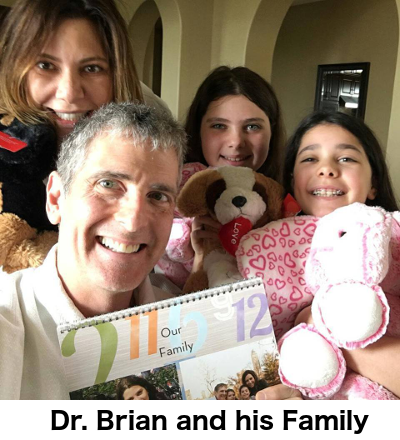
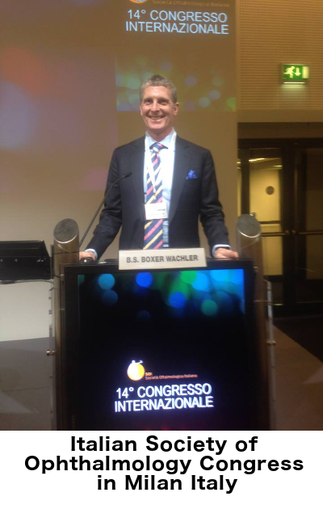
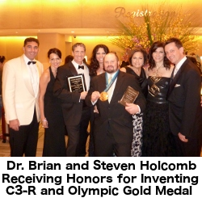

Why Choose Dr. Brian for your Vision Needs
As with everything in life, experience matters when it comes to treating your vision. Just like with any medical procedure, the skill and experience of the doctor is paramount to the success of your treatment. Choosing the “right doctor” wisely has never been more important than now. People choose Dr. Brian because he has the Experience You Can Trust!
Dr. Brian Boxer Wachler has been voted one of the world's top eye surgeons and leaders in the field of vision correction both in the USA and in the world.
Dr. Brian takes pride in having the capability to offer his patients a complete selection of vision correction procedures that can be customized to their unique needs and provide the best possible outcome.
Dr. Brian is known as "America's TV Eye Doctor". He has been featured for his expertise on NBC Nightly News, CNN, Today Show, ABC News, CBS News, FOX News, KCAL9 News, PBS, Good Day LA, Dr. Phil, The Doctors, and EXTRA to name a few.
His role as the “doctor's doctor” has been earned through his unwavering integrity and his broad expertise. He is often consulted by other eye surgeons who need assistance with challenging patients and by patients that need repairs from prior eye procedures.
As a world renowned eye surgeon and Board-Certified by the American Board of Ophthalmology, eye surgeons and doctors from all medical fields come to Dr. Brian when they need eye surgery. Dr. Brian has also instructed more than 1000 eye surgeons on Lasik, Intacs, and Insertable Lenses, as well as, other eye surgery courses.

Dr. Brian lectures, teaches and publishes extensively on surgical vision correction. He has presented over 273 scientific papers at medical conferences around the world and has published 3 books.
Through his extensive research, Dr. Brian has helped develop many surgical techniques and guidelines that have become industry standard. One such example is that he established industry LASIK guidelines to reduce the risk of halos and glare.
Dr. Brian also has invented and pioneered many procedures to help treat eye diseases and improve people's lives. Some of these procedures include:
Dr. Brian is respected as a leader at the forefront of Refractive Surgery and was voted as one of the world's best Refractive Surgeons by his peers.
Dr. Brian works with the United States Food and Drug Administration (FDA) clinical trials for investigating new procedures, equipment, and protocols.
Dr. Brian was the Director of the UCLA Laser Refractive Center at the Jules Stein Eye Institute for many years and is still on staff there at UCLA. He is also on staff at Cedars-Sinai Medical Center.
Dr. Brian is a recipient of multiple honors and achievement awards. Among his many awards, the Jules Stein Living Tribute Award was presented to Dr. Brian for pioneering alternative treatments to the painful cornea transplant for Keratoconus patients.
As much as Dr. Brian has been awarded multiple awards and honors, one of the most meaningful accolade to him is when one of his patients said, “Dr. Brian, there are no boundaries within your heart when it comes to helping people all over the world and every walk of life. You are a truly an amazing man and doctor.”
Why your Vision Correction Results can only be as good as the Diagnosis
Not only is it important to choose the “right doctor” for your vision needs, but it is also important to choose the “right facility” for your eye concerns and treatment.
Choosing which eye correction procedure is right for you is an important decision. At Boxer Wachler Vision Institute, we spend a good deal of time upfront assessing your eyes so that we can make the best possible recommendations for your situation. Our patients must pass all of our testing to be a candidate.
Among the important tests that we perform are dry eye assessment, pupil size, corneal topography, and corneal thickness. After you complete all the necessary tests, you will be examined by Dr. Brian and he will personally discuss the results of the tests along with your treatment options and his recommendations to correct your vision. At your consultation, Dr. Brian will spend time answering all your questions so you feel comfortable with your decision for treatment.
Our progressive Institute was designed with the comfort of the patient in mind. Patients often refer to the Institute being “as relaxing as a spa!”.
To help optimize our patients’ results, a “humidity-controlled” surgical facilities and our air filtration system removes bacteria, viruses, and particles as small as 0.003 microns. This system filters the surgery room air 9 times per hour.
While having treatment at Boxer Wachler Vision Institute, Dr. Brian and his entire staff will do everything to make sure you feel comfortable both during and after your eye procedure. Dr. Brian's skills, patient care and state-of-the-art facility provide patients with the best possible vision correction results.
One of Dr. Brian’s special qualities is that although he sees patients from all “walks of life”, famous and non-famous, Dr. Brian is described as one of the most “down to earth” doctors people have met. Everyone receives the same high quality of care regardless if you are a famous celebrity or a manual laborer in the field. He has a special empathy for all people who have eye problems and his career mission is to help everyone who needs him.
Our procedures are often described as “miraculous”. However, to make sure you receive the correct treatment for your vision, it is imperative you have a correct diagnosis for your eye condition. Since no two eyes are the same, the only way for you to know if you are a candidate is to have an advanced diagnostic examination by an experienced doctor like Dr. Brian. If you have any questions or would like to make an appointment for an advanced diagnostic examination, call (310) 594-5209 or email us. We are always here to help.
Introduction to Boxer Wachler Vision Institute